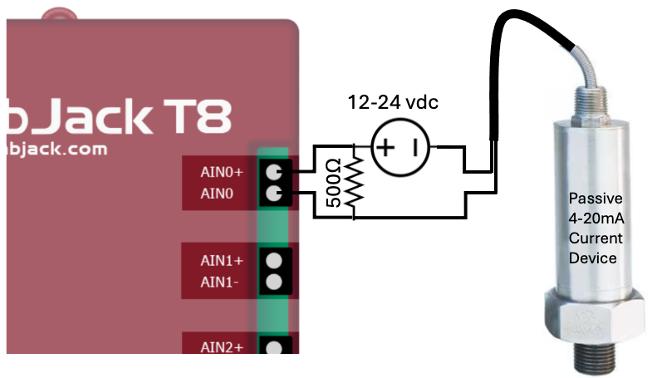
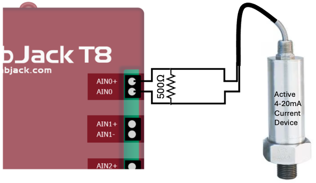

M2 Technical Reference  ¶
¶
This section contains details on some of the core M2 functions and nodes, as well as deeper discussions on some of the technical considerations.
ROS2 Nodes¶
The M2 Reference Design includes the following nodes. Click on the item to expand its description.
Node: m2_supervisor_node
This node manages a number of MODAQ's core functionality, which include system logger, email alerts, and rate limiter (snoozer)
Package: m2_supervisor
Alias: M2Supervisor
Configuration Parameters:
- log file path
- log file size limit
- SMTP settings
- distribution email lists (2x)
- analyzed topics
- email snooze interval
Subscriptions: /system_messenger
Node: bag_recorder_node
Subscribes to one or more (or all) topics published by the M2 system and records the data to a bag file. File duration specifies how many minutes to allow a bag file to grow before closing and starting a new file. Logged topics would be a comma-separated list of topics to save to the bag file, or "*" (including the quotes) to log all published topics.
Package: bag_recorder
Alias: N/A
Configuration Parameters:
- data folder
- file duration
- logged topics
Subscriptions: /system_messenger, /bag_control
Node: labjack_ain_reader
Reads up to 8 AI channels simultaneously from a single Labjack T8. This node uses a configurable timer to fetch (poll) channel reads from the T8.
Package: labjack_t8_ros2
Alias: LabjackAINSlow
Configuration Parameters:
- IP address
- sample rate
- topic name
Subscriptions: none
Node: labjack_ain_streamer
Streams up to 8 AI channels from a single Labjack T8. This node sets the T8 to stream data continuously at rates up to 40 kHz. Channel reads are simultaneous. To better manage network resources for high speed streams, data transfers are batched by the ScansPerRead parameter.
Package: labjack_t8_ros22
Alias: LabjackAINFast
Configuration Parameters:
- IP address
- sample rate
- scans per read
- topic name
Subscriptions: none
Node: labjack_dac_writer
Controls one or more analog outputs on the T8. Output voltage can be adjusted between 0-10 VDC or ±10v with the LJTick-DAC
Package: labjack_t8_ros2
Alias: LabjackDAC
Configuration Parameters:
- IP address
- channel selection
- topic name
Subscriptions: /LJ_Ctl_Pub
Node: labjack_do_node
Switches one or more digital output (logic level) channels on the T8 high or low.
Package: labjack_t8_ros2
Alias: LabjackDO
Configuration Parameters:
- IP address
- topic name
Subscriptions: /do
Node: labjack_dio_reader
Reads the logic state of one or more DIO channels.
Package: labjack_t8_ros2
Alias: LabjackDIN
Configuration Parameters:
- IP address
- topic name
Subscriptions: none
Node: adnav_driver
Manages configuration and initialization of the Advanced Navigation GNSS Compass and publishes its data.
Package: adnav_gnss_compass
Alias: AdnavCompass
Configuration Parameters: too many to list here
Publishers: /system_messenger, /nav
Subscriptions: none
Node: xsens_mti_node
Manages configuration and initialization of the Xsens MTi-G-710 and publishes its data. This is a 3rd party package cloned from here. This can work with other Xsens inertial sensors too.
Package: bluespace_ai_xsens_ros_mti_driver
Alias: XsensINS
Configuration Parameters: too many to list here
Publishers: /system_messenger, /imu/acceleration
Subscriptions: none
Node: ed582_driver
Reads up to four channels of RTD temperature measurements from a Brainbox ED-582. This is adapted from a 3rd party API available here.
Package: ed582
Alias: RTDed582
Configuration Parameters:
- IP address
- sample rate
- topic name
Subscriptions: none
Node: m2_control
This node can read directives published by the HMI and/or incorporate control logic and publish actions for digital or analog output channels.
Package: m2_control
Alias: M2Control
Configuration Parameters:
- IP address
- sample rate
- topic name
Subscriptions: /hmi_ctl
Node: rosbridge_websocket
This node creates a bridge between ROS2 and a websocket that is used to subscribe to and publish topics from a webpage using roslibjs. This is a lightly modified version of rosbridge_server from the rosbridge_suite github repo.
Package: rosbridge_server_m2
Alias: Rosbridge
Configuration Parameters: none
Publishers: /hmi_ctl
Subscriptions: /din, /ain_slow, /rtd
Real-Time¶
A real-time system is one that assures certain deadlines are met reliably within expected time constraints. See this Wikipedia article for a more complete definition.
Recommended Reading
This series of blog posts by Shuhao Wu is an excellent, easy to read distillation of numerous resources on real-time computing. This is highly recommended reading to provide context to some of the topics that will be discussed in this section.
Using a real-time architecture and approach in MODAQ allows better management of sources of latency and reduction of jitter. What this means in practical terms is that certain time-critical loops, processes, or functions can execute deterministically and that variation in timing of successive iterations is kept low.
Latency¶
Opening Task Manager in Windows or the equivalent in in other operating systems (OS), there may be hundreds of processes listed that are all vying for a slice of the CPU's time. These include things like device drivers, software updaters, user software, malware detectors, and lots of other things that comprise the modern computing experience. With fast, multi-core processors, these appear to be seamlessly juggled, usually with little delay apparent to the user. This is all managed by the scheduler and it tries to be fair as it doles out access to a CPU core. Under critical analysis, an application may have to wait a non-deterministic amount of time for that CPU attention- and that wait time might vary considerably for each request. This variation may be only a few milliseconds but for DAQs running loops hundreds or several thousand times per second, that's an eternity.
A properly configured real-time stack offers the software developer some tools to better manage how the real-time code gets its CPU time by preempting lower priority processes (jumping to the head of the line). The end effect is that the real-time code should experience less of this source of latency.
Info
Determinism
A deterministic real-time system should complete a task within a bound time period in a consistent and repeatable manner.
Different real-time approaches yield better or worse maximum latency periods. Specific project requirements or use-cases often dictate the maximum acceptable latency for a particular application. This is most common for safety-critical systems, such as an anti-lock brake controller, where missing a deadline can result in disaster. These will often be associated with terms such as "guaranteed" or "hard" real-time. From a system architecture and software development standpoint, achieving this level of latency and determinism is difficult and probably not practical nor even necessary for a DAQ such as M2.
However, in the space between extremely low latency, safety-critical, real-time systems and general purpose operating systems without real-time support, there is Real-Time Linux. Or, more correctly, the PREEMPT_RT patch for Linux kernels.
Real-Time Linux¶
Linux with the PREEMPT_RT patch has been successfully used in various industries such as automotive, space, and industrial automation for years and by organizations including National Instruments, NASA, and SpaceX.12 This lends confidence that it's appropriate for M2 applications.
At the time of writing, it appears that the mainline Linux kernel is expected to gain real-time support3 in a coming release. Until that happens, it's necessary to manually compile the kernel with the PREEMPT_RT patch or find a distribution for an already patched RT kernel.
Validating RT Performance¶
Once a patched kernel has been installed and the necessary changes to BIOS have been made, it's necessary to conduct some tests on the system to validate the 'as-built' latency performance.
A very useful tool for this is provided by intel: RTPM. This tool will evaluate the settings on your computer to ensure they are optimized for real-time performance. It also will conduct several tests that will characterize your real-time performance. For Arm64, consider using available benchmarking tools such as cyclictest.
Precision Time Protocol¶
The promise of PTP is that all connected PTP-aware devices will be synchronized and reference-time accurate to 100's, if not 10's of nanoseconds- without drift. By comparison, Network Time Protocol (NTP), which is what most consumer computers and laptops use as a time reference, can at best achieve 10's of milliseconds accuracy. While NTP accuracy might be perfectly acceptable to some and often better than a real time clock (which can drift several seconds a day), it's a ~6 order of magnitude difference in accuracy as compared to PTP. If a quality time reference is not available, samples taken from input modules on the same DAQ controller will be disciplined by the same clock and will likely be precisely timestamped relative each other, but may not be accurate to actual time (i.e. UTC) .
Where the real power of PTP is realized is in synchronizing samples taken by disparate systems. These can be DAQs on the same subnet, sharing the same master clock or systems completely disconnected from each other and separated miles apart. As long as each system is disciplined to a healthy PTP reference clock, the samples will be synchronized to the aforementioned nanosecond time precision. This is a boon for distributed architectures and system design flexibility, allowing multi-controller synchronization without physical interconnections.
Does Your Controller Support PTP?
The controllers discussed in the Hardware section all support PTP. The ethernet port(s) on your controller must have hardware timestamping for PTP to work. To verify PTP support:
- Find the logical name of the ethernet port using
lshw -class networkin the command line. it will be something like eth0 or enp3s0. -
ethtool -T <port logical name>modaq@modaq-ODYSSEY-X86J4125:~/M2-Dev$ ethtool -T enp3s0 Time stamping parameters for enp3s0: Capabilities: hardware-transmit software-transmit hardware-receive software-receive software-system-clock hardware-raw-clock PTP Hardware Clock: 1 Hardware Transmit Timestamp Modes: off on Hardware Receive Filter Modes: none all -
The important values are hardware-transmit and hardware-receive. If neither of these (or both) do not appear, then PTP hardware support is not available. If software-transmit and software-receive appear (without hardware-transmit and hardware-receive), then PTP is possible, albeit degraded (sub-millisecond accuracy, higher jitter).
In our experience, PTP implementation either works magically or is a real bear. It does help to have some knowledge of networking and configuring managed switches. PTP requires the following for optimal performance:
- PTP time server
- PTP-capable endpoints (e.g. M2 controller, ethernet based devices)
- PTP services configured and running on the endpoints
- PTP-capable network switch
These items need to be properly configured, otherwise the PTP performance may be degraded or non-existent. For instance, we've found that some cheap consumer unmanaged switches (such as the Netgear GS305) will pass PTP packets, however the observed PTP performance degrades to microsecond accuracy with large standard deviations. This is still pretty good and better than NTP, but not ideal and possibly not reliable.
The linux support for PTP can be installed using sudo apt install linuxptp. This enables the ptp4l tool which allows user interaction with the PTP hardware clocks on your controller's NIC.
Command line startup of ptp4l (Intel controller):
ptp4l will run and display an output similar to this (use ctrl-c to quit):
modaq@m2-controller:~$ sudo ptp4l -m -s -H -i enp2s0
ptp4l[1576.346]: rms 228 max 382 freq -10480 +/- 259 delay 6276 +/- 37
ptp4l[1577.347]: rms 302 max 595 freq -10570 +/- 340 delay 6350 +/- 43
ptp4l[1578.347]: rms 165 max 286 freq -10514 +/- 191 delay 6364 +/- 25
ptp4l[1579.347]: rms 437 max 634 freq -10263 +/- 455 delay 6281 +/- 27
rms field tells us our timing accuracy in nanoseconds for the samples. In this case we're achieving <500 ns accuracy. This value may be higher or lower in order of magnitude depending on the hardware used, but the goal is to achieve <10 µs (10,000 ns) rms values and that they don't fluctuate wildly from sample to sample.
The role of ptp4l is to configure the PTP Hardware Clock (PHC) support and participate as a PTP client. However, to synchronize the PTP time to the system clock, an additional service is needed: phc2sys.

phc2sys is included in the linuxptp package installed earlier and can be run from the terminal as a test. For this to work, ptp4l must be running. Therefore, start ptp4l in one terminal window, open another terminal window and run phc2sys. In this example, the rms value of our system clock's accuracy is <500 ns.
modaq@m2-controller:~$ sudo phc2sys -s enp2s0 -w -m -u 2
phc2sys[1163.122]: CLOCK_REALTIME rms 384 max 386 freq -9958 +/- 55 delay 1684 +/- 2
phc2sys[1165.123]: CLOCK_REALTIME rms 95 max 126 freq -10228 +/- 67 delay 1683 +/- 10
phc2sys[1167.124]: CLOCK_REALTIME rms 323 max 456 freq -9950 +/- 220 delay 1656 +/- 36
phc2sys[1169.125]: CLOCK_REALTIME rms 464 max 554 freq -9514 +/- 18 delay 1690 +/- 6
Running ptp4l and phc2sys as System Services¶
In the previous example, ptp4l and phc2sys were running in the command line and while this works, they need to be manually started each time and occupy 2 terminal windows. Instead, we can make them into services that automatically run when the system boots up.
ptp4l¶
To run as a service, there needs to be a valid ptp4l.conf file in /etc/linuxptp/. There should already be a file in that location, but it's probably configured wrong for this setup (such as turning on both server and client stuff). Suggest copying this file elsewhere for safekeeping then delete the contents and replace with (where enp2s0 is replaced with your preferred NIC):
ptp4l has many more settings available than the few used in these examples- and even these settings may have multiple options. Consult the ptp4l man pages for more info.
To start the service: sudo systemctl start ptp4l
To stop the service: sudo systemctl stop ptp4l
To enable the ptp4l service to start at boot: sudo systemctl enable ptp4l
To disable the ptp4l service starting at boot: sudo systemctl disable ptp4l
Troubleshooting
Issue: ptp4l will launch fine from command line, but will fail with systlog entries complaining about ioctl SIOCETHTOOL failed, PTP device not specified…, and/or failed to create a clock when run as a service.
Solution: (from: /usr/share/doc/linuxptp/README.debian):
- Create a directory: /etc/systemd/system/ptp4l.service.d
- In that directory, create a file with extension .conf (name does not really matter, call it ptp4l.conf for instance)
-
Place the following lines in the file, replacing eth0 with desired port for instance enp2s0:
-
Reboot and service should be able to start as expected
Issue: systemctl fails to launch with a Unit name ptp4l.service not found when trying to start ptp4l as a service:
Solution: The ptp4l service file is misnamed.
Open a terminal in /lib/systemd/system and type: sudo cp ptp4l@.service ptp4l.service
phc2sys¶
To run as a service, first need to edit: /usr/lib/systemd/system/phc2sys.service.
NOTE: if phc2sys.service does not appear in the folder, but phc2sys@.service does, rename the file with this command in the terminal: sudo cp phc2sys@.service phc2sys.service
Open a terminal window in that folder and type: sudo nano phc2sys.service to open the file in a simple text editor.
Edit the phc2sys.service file with the following:
(note: everything should be the same except for changes to the ExecStart= line)
[Unit]
Description=Synchronize system clock or PTP hardware clock (PHC)
Documentation=man:phc2sys
Requires=ptp4l.service
After=ptp4l.service
Before=time-sync.target
[Service]
Type=simple
ExecStart=/usr/sbin/phc2sys -w -s eth0 -c CLOCK_REALTIME -u 60
[Install]
WantedBy=multi-user.target
Save and exit nano.
enp2s0 (or eth0) in the above example should be the ethernet port connected to the subnet with the master clock -u 60 writes to the syslog every 60 seconds, you can change this for more or less logging as desired.
To start the service: sudo systemctl start phc2sys
To stop the service: sudo systemctl stop phc2sys
To enable the phc2sys service to start at boot: sudo systemctl enable phc2sys
To disable the phc2sys service starting at boot: sudo systemctl disable phc2sys
Troubleshooting
The instructions above edits the ptp4l.service and phc2sys.service in locations that could get overridden by a software update. It may be necessary to use a 'drop-in' .conf file to override desired settings. This file will live in /etc/systemd/system/<serviceName>.d/override.conf, where <serviceName> would be either ptp4l.service or phc2sys.service, depending on which you're editing. The actual filename of the override file does not matter, as long as it lives in this folder and has the .conf extension. These steps may also be necessary if the services launch fine, but don't appear to be using the settings you configured.
The contents of the ptp4l.service.d/override.conf would like like this:
And the phc2sys.service.d/override.conf:
NOTE: the blank Execstart= serves to clear or reset the value placed by the original service file that is being overridden. The value after -s should be the desired ethernet port.
Parsing MCAP Files¶
The mcap file format was designed by Foxglove and they also developed a GUI software that is able to process these data files and output plots, tables and other useful visualizers. For information on this GUI viewer, please see Useful Links.
To analyze the data, we recommend using the rosbags python package which is also able to parse the mcap files and generate numpy arrays which can be used for data analysis. This can be installed with pip: pip install rosbags
Example Python code for parsing mcap files:
from rosbags.rosbag2 import Reader
from rosbags.serde import deserialize_cdr
import numpy as np
from matplotlib import pyplot as plt
from pathlib import Path
from rosbags.typesys import Stores, get_types_from_msg, get_typestore
import os
def get_all_file_names(folder_path):
try:
# List all files in the given folder
file_names = os.listdir(folder_path)
# Filter out directories, only keep files and return their full paths
file_paths = [os.path.join(folder_path, file) for file in file_names if os.path.isfile(os.path.join(folder_path, file))]
# Generate the modaq_messages/msg/{FILE_NAME} strings
modaq_messages = [f"modaq_messages/msg/{os.path.splitext(file)[0]}" for file in file_names if os.path.isfile(os.path.join(folder_path, file))]
return file_paths, modaq_messages
except Exception as e:
print(f"An error occurred: {e}")
return [], []
# Example usage
folder_path = r"C:\MODAQ\MODAQ2-RD-Dev\src\modaq_messages\msg"
file_names, message_types = get_all_file_names(folder_path)
print(file_names, message_types)
typestore = get_typestore(Stores.ROS2_HUMBLE)
add_types = {}
for i, name in enumerate(file_names):
print("name: ", name)
msgpath = Path(name)
msgdef = msgpath.read_text(encoding='utf-8')
print(msgdef)
add_types.update(get_types_from_msg(msgdef, message_types[i]))
typestore.register(add_types)
# create reader instance and open for reading
last_time = 0
last_timer = 0
dt_ros = []
dt = []
with Reader(r"./") as reader:
# Topic and msgtype information is available on .connections list.
for connection in reader.connections:
print(connection.topic, connection.msgtype)
# Iterate over messages.
for connection, timestamp, rawdata in reader.messages():
if connection.topic == '/ain_flap':
msg = typestore.deserialize_cdr(rawdata, connection.msgtype)
time = (msg.header.stamp.sec + (msg.header.stamp.nanosec/1e9))
dt_ros.append(time-last_time)
last_time = time
plt.plot(np.array(dt_ros)[100::])
plt.show()
Alternatively, we've developed the MODAQ Toolkit in python to convert the MCAP files to the Parquet data format, which is more compatible with analytic environments including python and MATLAB.
ADCs¶
While there's an abundance of really good analog to digital converters (ADCs) on the market, one of our biggest challenges was finding one suitable for our requirements, which are driven by the needs of conducting power quality and power performance assessments of the power take off system on marine energy devices per IEC TS 62600-(30, 100, 200). Our ideal ADC interface would have the following attributes:
- 24 bit
- Simultaneous sampling
- At least 4 channels
- Channel-to-channel isolation
- ±10 volt input range
- Anti-aliasing filter
- Not dependent on a particular vendor's controller (i.e. non-proprietary)
- Ready to go, with simple ethernet or USB interfacing
- linux drivers, API, or library
This admittedly is a bit of a unicorn and devices we've found generally fall short on one or more of the above requirements. The Labjack T8 that we feature in this reference design comes the closest, but lacks a dedicated anti-aliasing filter. This is mitigated to some degree by selecting high sample rates (the T8 can sample to 40 kHz) and with the inherent filtering by the delta-sigma method in the T8's ADC. Further, a simple RC stage (low-pass filter) can be added at the analog inputs to attenuate high frequencies before the signal gets digitized.
Another important consideration is measurement simultaneity. Many (cheaper) multichannel ADC interfaces may have only one ADC and the input channels are sampled sequentially. These devices use a multiplexer circuit to rapidly cycle through the requested channels, so there's a small delay between when each measurement is actually made. The T8 contains eight separate ADCs that can sample the input channels simultaneously, which can be important for analyzing multichannel signals.
4-20 mA Current Loops¶
One or more of the 8 analog inputs available on the RD could be allocated for measuring outputs from devices that signal using a current loop. The 4-20 mA current loop would be converted to 1-5 volts using a 250 Ω (or 2-10 VDC using a 500 Ω) precision shunt resistor connected across the positive and negative input terminals of the voltage channel.
Alternatively, M2 supports using current loop interface modules with digital outputs (example 1, example 2), which is not included in the RD specification, but available upon request.


It's important to note that there are 2 types of current loops: passive and active. Passive devices (such as some pressure transducers) require an external source driving the current loop, while active devices provide the driving source internally. The M2 RD supports active loops through the shunt resistor method mentioned in the first paragraph. Passive circuits can be made active with the addition of a power supply. The example 1 link for the optional current loop interface works with passive devices.
Heading¶
Getting a reliable estimate of heading on a fixed or semi-stationary device can be tricky. Devices that rely on Earth's magnetic field need to be calibrated in-situ and have the proper magnetic declination correction applied.
Since a calibration procedure generally requires rotating the sensor 360° in one or more axis, this is often difficult or near impossible once the sensor is mounted on the device (WEC, buoy, etc). It's easier to calibrate the compass prior to installation, however this is not effective, since the magnetic field will most likely be distorted by the presence of hard and soft iron sources near the mounting location.
This leads to our decision to include the Advanced Navigation GNSS Compass in the M2 RD design specification. It avoids the issues associated with magnetic compasses by using dual GPS antennas to achieve 0.2° heading performance. Because of the antennas, it needs a clear view of the sky- which might not be possible in some use-cases. Therefore, the magnetic heading from the Xsens INS can be used instead.
If very precise heading estimates are required in your application and GPS is not an option, we suggest looking at some gyrocompass options, such as the ring laser or fiber optic gyros.